В меню Заседатели става добавяне на съдебни заседатели за избор по дела, в чиито състав се изисква наличие на съдебни заседатели. Въвеждат се болнични дни и отпуски на заседателите.
9.1.1.1 Заседатели
Създаване на заседател
Използва се текущата функционалност за създаване на съдебен заседател. След успешно създаване на потребителя не му се присвояват никакви роли.
В екрана на меню Заседатели -> Заседатели се визуализират всички заседатели добавени в конкретен съд.
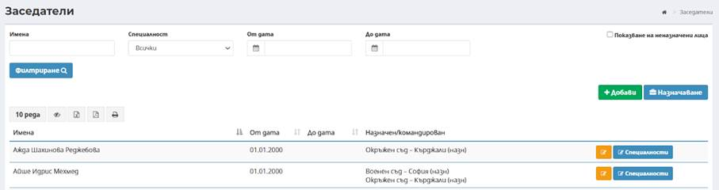
Посредством бутон има възможност за добавяне на нов заседател, чрез въвеждане на необходимите данни:
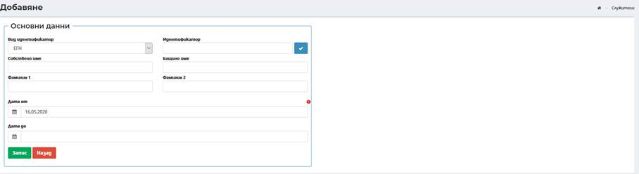
Вид на идентификатор – по подразбиране е избран вид идентификатор ЕГН;
Идентификатор – въвежда се ЕГН на лицето;
Имена за лицето – въвеждат се в съответните полета: Собствено име, Бащино име, Фамилия и Фамилия 2;
Дата от – въвежда се начална дата на активност на профила на заседателя. По подразбиране е въведена текуща дата, която може да бъде променена от потребител;
Дата до – въвежда се крайна дата на активност на профила на заседателя. Полето не е със задължителен характер.
След въвеждане на всички изискуеми данни и избор на бутон Запис успешно се добавя нов профил на заседател.
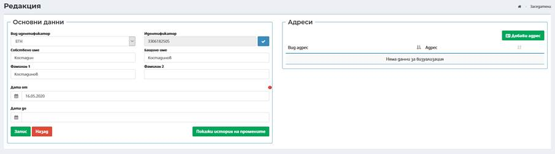
В дясната част на екрана се визуализира секция Адреси, в която могат да бъдат въведени данни за адресът/ите за заседателя, посредством бутон Добави адрес . Секцията не е със задължителен характер.
Нов
адрес за съответния заседател се въвежда при избор на бутон Добави адрес
 като
се
зареждат полета в следният екран:
като
се
зареждат полета в следният екран:
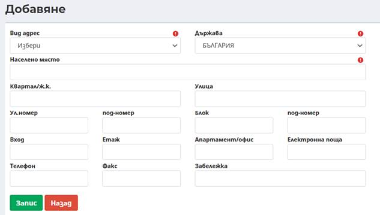
Забележка: Въвеждат се данните за адрес, като задължително трябва да се въведат вид адрес, държава и населено място.
Вид адрес – избор на вид на адрес от номенклатура;
Държава – избор от номенклатура за конкретната държава за лицето, като по подразбиране в полето е заредено България;
Населено място – чрез автоматично попълване след търсене по част от името (въвеждат се минимум три букви от населеното място) и се предлага потребителя да избере съответното населено място;
Квартал/ж.к. – чрез автоматично попълване след търсене по част от името (въвеждат се минимум три букви от квартал/ж.к.);
Улица - чрез автоматично попълване след търсене по част от името (въвеждат се минимум три букви от наименованието на улица);
Ул. номер – въвежда се номера на улицата;
Под-номер - въвежда се под-номера на улицата;
Блок – въвежда се номер на блок;
Под-номер - въвежда се под-номера на блока;
Вход - въвежда се номер на вход;
Етаж - въвеждат се данни за етаж;
Апартамент/офис - въвеждат се данни за апартамент/офис;
Електронна поща – въвежда се електронна поща на лицето;
Телефон – въвежда се стационарен телефон или мобилен номер;
Факс - въвежда се номер на факс;
Забележка – при необходимост може да се въведе допълнителна информация.
Забележка: Адрес в друга държава – в свободно текстово поле се въвежда адрес.
Посредством бутон има възможност за корекция на данните на заседател:
Екранът за редакция съдържа аналогични полета като тези при въвеждане. Не може да се редактира идентификатор на заседател.
При добавяне на профил на заседател има възможност за избор на специалност на заседател – социални дейности, педагогика и психология. Посредством избор на бутон има възможност за избор на специалност на заседател, която да бъде налична за избор при случайно разпределение на съдебни заседатели:
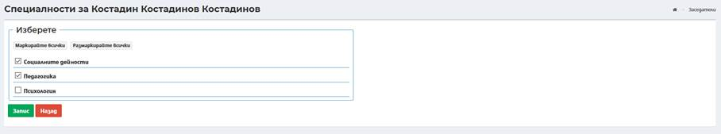
Избор на специалност става посредством маркиране на чекбокс през имената на съответния съдебен заседател. Има възможност за избор на всички специалности.
След
въвеждане на всички изискуеми данни и избор на бутон Запис
 успешно се добавя нова/и специалност/и към съдебен заседател.
успешно се добавя нова/и специалност/и към съдебен заседател.
9.1.1.2 Назначаване
От меню Заседатели->Назначаване или посредством избор на бутон от меню Заседатели->Заседатели има възможност за назначаване на въведен призовкар в даден съд.
От екран със списък с всички създадени профили на заседатели в даден съд посредством избор на бутон Добави след зареждане на съответната екранна форма се въвеждат необходими данни за назначаване на заседател:
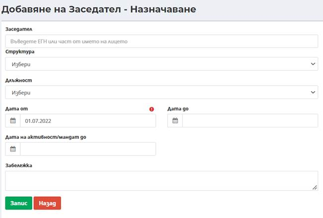
Заседател – при въвеждане на минимум три последователни символа, системата автоматично търси и предлага за избор списък от заседател;
Структура – избира се от падащ списък с организационни единици, въведени в организационната структура на конкретния съд. Полето не е със задължителен характер за заседатели;
Длъжност – избира се от падащ списък с възможност за избор на длъжност на съдебен заседател;
Дата от – въвежда се начална дата на активност на заседателя. По подразбиране е въведена текуща дата, която може да бъде променена от потребител;
Дата до – въвежда се крайна дата на активност на заседателя. Полето не е със задължителен характер;
Дата на активност/мандат до - oграничава участието на съдебни заседатели в случайно разпределение без да ограничава извършване на действия по вече разпределени дела. Пример: На съдебен заседател 1 в назначение в съд X са заложени следните дати: Дата от: 01.01.2022 г., Дата до: 31.07.2022 г., Дата на активност/мандат: 30.06.2022 г. Съдебният заседател ще може да участва в заседания и да подписва съдебни актове след 30.06.2022 до 31.07.2022 г., но ще участва в случайно разпределение за нови дела до 30.06.2022 г.
Забележка – при необходимост може да се въведе допълнителна информация.
След въвеждане на всички изискуеми данни и избор на бутон Запис успешно се добавя ново назначаване на съдебен заседател.
От екран с назначени заседатели посредством въвеждане на минимум три последователни символа, системата автоматично търси и предлага за избор списък от назначени заседатели.
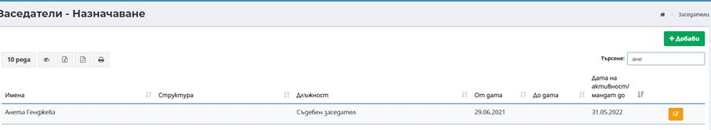
Посредством бутон Редакция има възможност за редакция на въведеното назначаване на заседател. Екранът за редакция съдържа аналогични полета като тези при въвеждане.
9.1.1.3 Болнични дни
От меню Заседатели->Болнични дни става въвеждане на периоди на болнични за заседатели.
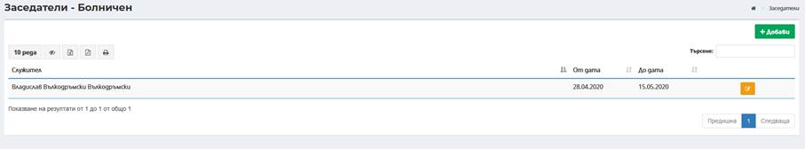
Въвеждане на болнични става посредством избор на бутон Добави чрез въвеждане на необходимите данни:
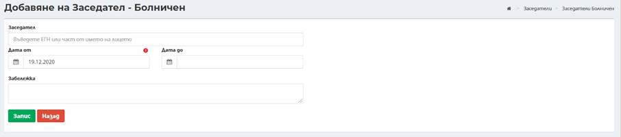
Заседател – при въвеждане на минимум три последователни символа, системата автоматично търси и предлага за избор списък от заседатели;
Дата от – въвежда се начална дата на болничен на заседател. По подразбиране е въведена текуща дата, която може да бъде променена от потребител;
Дата до – въвежда се крайна дата на болничен на заседател. Полето не е със задължителен характер;
Забележка – при необходимост може да се въведе допълнителна информация.
След въвеждане на всички изискуеми данни и избор на бутон Запис успешно се добавя нов период на болнични на заседател.
9.1.1.4 Отпуски
От меню Заседател и->Отпуски става въвеждане на периоди на отпуски за заседатели .
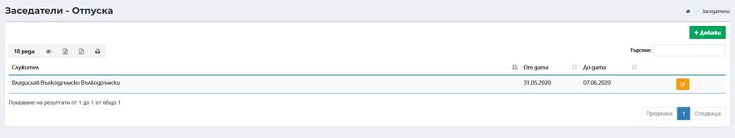
Въвеждане на отпуски става посредством избор на бутон Добави чрез въвеждане на необходимите данни:
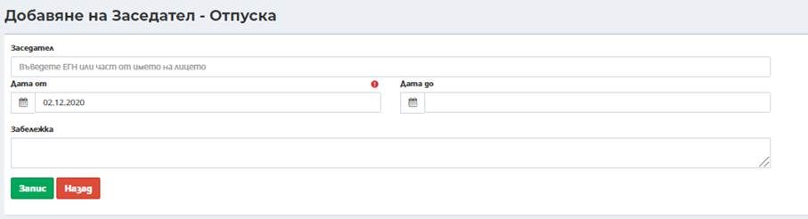
Заседател – при въвеждане на минимум три последователни символа, системата автоматично търси и предлага за избор списък от заседатели;
Дата от – въвежда се начална дата на отпуска на заседател. По подразбиране е въведена текуща дата, която може да бъде променена от потребител;
Дата до – въвежда се крайна дата на отпуска на заседател. Полето не е със задължителен характер;
Забележка – при необходимост може да се въведе допълнителна информация.
След въвеждане на всички изискуеми данни и избор на бутон Запис успешно се добавя нов период на отпуска на заседател.
9.1.1.5 Ставка възнаграждение за заседатели
Въвежда се ставката за заседател към конкретен съд:
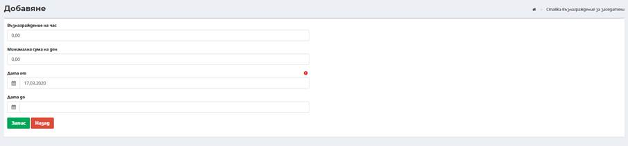